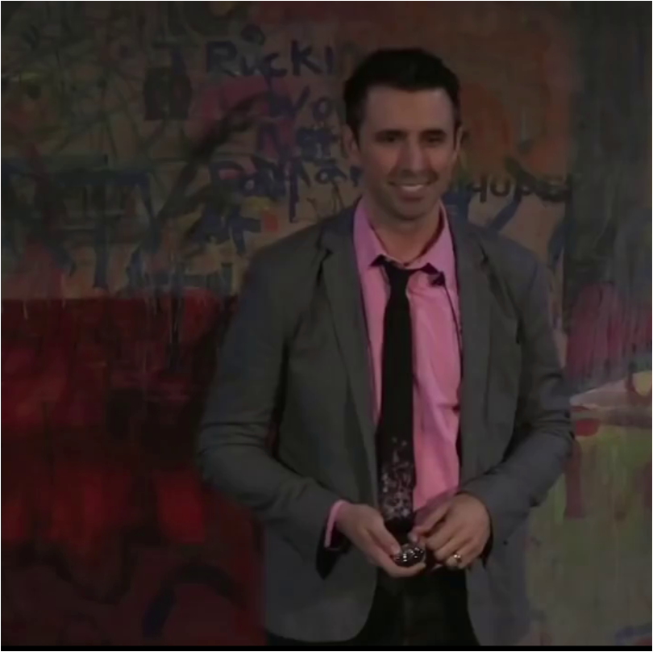

Using audio to animate avatars in still images with co-speech gestures has a wide range of applications in real-world scenarios such as virtual meetings and digital education, yet it remains a quite challenging task. Previous work often relied on single-image-driven techniques, which limited the quality of generated videos with larger motion amplitudes. Thus, we design a multi-reference renderer, which takes multiple reference images from different perspectives as input, to bridge the gap between target pose and a certain reference image and ensure overall consistency. Moreover, considering that speech and gesture are not strictly one-to-one mapping, we utilize contrastive learning to capture the subtle interplay between vocal context and corresponding gestures. Hence, the proposed system, which contains co-speech gesture generation and multi-reference renderer, not only enhances the naturalness and fluidity of the synthesized videos but also enables more expressive and dynamic animation. We conduct experiments on TED-Expreesive dataset and the experimental results indicate that the proposed system surpasses previous methods both objectively and subjectively. Video samples can be found on our demo page (csgvg.github.io).
| Reference image | Ours | SpeechDrivesTemplate + TPSM |
|---|---|---|
|  | ||
The image in the upper left corner is the reference image for single-reference.
| reference images | single reference | Multi-reference |
|---|---|---|